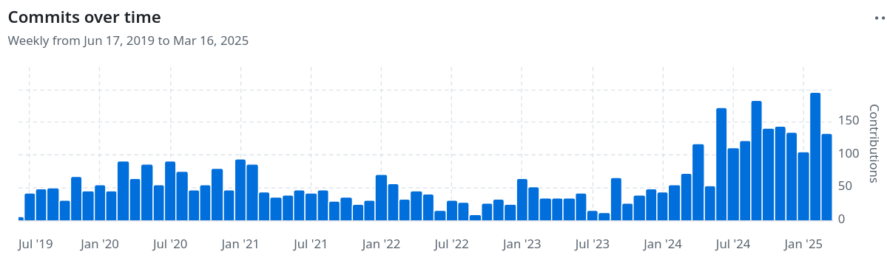

Stand des GRASS GIS Projekts: Neuigkeiten und Perspektiven
Markus Neteler (mundialis GmbH & Co. KG)
& Verónica Andreo, Vaclav Petras, Anna Petrasova
FOSSGIS 2025 - Münster

Die letzten 42 Jahre von GRASS GIS
GRASS GIS (Geographic Resources Analysis Support System), eine FOSS-Suite für die Verwaltung und Analyse von Geodaten, Bildverarbeitung, räumliche Modellierung und Visualisierung.
Mehr als 42 Jahre kontinuierliche Entwicklung!
Mehr als 42 Jahre kontinuierliche Entwicklung!
Highlights der Version 8.4
Mehr Benutzerfreundlichkeit
Der Begriff "Location" heißt nun einfach "Project":
für eine intuitivere Datenorganisation
Neue Analysewerkzeuge:
mehr Machine Learning
Überwachte Klassifizierung mit Support Vector Machines (SVM)
- i.svm.train: Eine Support Vector Machine trainieren
- i.svm.predict: Vorhersage mit einer Support Vector Machine
 by Maris Nartiss (Nartiss & Melniks 2023)
by Maris Nartiss (Nartiss & Melniks 2023)
Schnittstellen: JSON für Textausgaben
In immer mehr GRASS Tools neu:format="json" Ausgabe
GRASS nc_spm_08/user1:~ > v.info zipcodes_wake format=json
{
"name": "zipcodes_wake",
"mapset": "PERMANENT",
"title": "Wake County zip codes (polygon map)",
[...]
"areas": 48,
"islands": 2,
"primitives": 206
}
| i.signatures | r.describe | r.info |
| r.category | r.geomorphon | r.kappa |
| r.colors.out | r.horizon | r.mask.status |
| r.object.geometry | r.profile | r.report |
| r.univar | r.what | r3.colors.out |
| r3.univar | t.rast.list | v.category |
| v.colors.out | v.db.select | v.db.univar |
| v.distance | v.info | v.univar |
GUI: Neues History Browser Panel
by Linda Karlovska mit einem GRASS Student GrantBessere Datenvisualisierung mit Jupyter
> grass.jupyter Python-Paket <
- Neue Klasse grass.jupyter.SeriesMap zur Animation von Serien von Vektor- oder Rasterkarten (zeitliche Animationen bereits verfügbar)
s = gj.SeriesMap(height = 500)
s.add_rasters(["elevation_shade", "geology", "soils"])
s.add_vectors(["streams", "streets", "viewpoints"])
s.d_barscale()
s.show()
- Neue Option, eine Karte mit grass.jupyter.interactivemap (ipyleaflet) zu erstellen (wird in G8.5 interaktiv sein)
m = InteractiveMap(map_backend="ipyleaflet")
m.add_vector("streams")
m.add_raster("elevation")
m.show()
Wachsende Entwicklungs-Community
github.com/OSGeo/grass/
Neue Dokumentation: Markdown statt HTML
Leitung: NC State Center for Geospatial Analytics
Neue Portal mit Tutorials
Frisch online: grass-tutorials.osgeo.org
Leitung: NC State Center for Geospatial Analytics
Over to you!
GRASS GIS bleibt eines der leistungsfähigsten
Open-Source-GIS-Tools für räumliche Analysen
- Unsere Community wächst und wird jünger
- Ein Meilenstein für 2025: GRASS Developer Summit im Mai in North Carolina, vollständig finanziert durch einen NSF-Grant
- Probiert GRASS aus oder holt euch das neue Update
Vielen Dank!